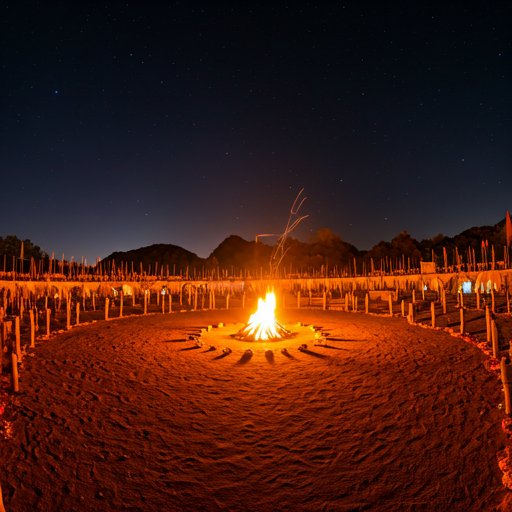

Ten Days of Transcendence
Click on each phase to reveal the spiritual significance of the daily rites.
Sankalpam & Preliminary Fire
The solemn vow taken by the Yajamana to perform the sacrifice for the welfare of the world. The kindling of the first ritual fire through the attrition of Arani wood.
Mahagni Chayanam
The construction of the great bird-shaped altar (Shyena Chiti) using precisely 10,800 bricks, embodying mathematical perfection.
Soma Abhishekam
The pressing of the sacred Soma stalks. This period marks the height of the rhythmic chants from the Rig and Sama Vedas.
nature_peoplePravargyam & Upasat
A sequence of intense daily rites leading to the peak of the sacrifice. Each movement is a codified gesture representing the movement of the stars and the seasons.

Putrakameshti & Mahavratam
The concluding rites where the fire is internalized. This final phase focuses on the prosperity of the lineage and the harmony of the universe (Rita).

The Soma Offerings
Continuous chanting and oblations offered through the 12 hours of total darkness.
Athirathram:
Crossing the Night
Unlike other Vedic sacrifices, the Athirathram ritual includes a rigorous nocturnal component. Priests remain awake, maintaining the rhythmic vibration of the mantras, ensuring that the light of consciousness does not falter even when the sun is absent.
The Science of Yajna
Ancient Geometry
The construction of Altars involves the Sulba Sutras, the world's oldest texts on geometry, predating Pythagoras by centuries.
Vedic Astronomy
Ritual timing is linked precisely to the positions of the Nakshatras (stars), reflecting a profound understanding of celestial mechanics.
Current Exhibition
Mathematics and Astronomy in Yajna Culture
Visit the onsite pavilion highlighting India’s historical scientific developments linked to the Vedic tradition.
How to Participate
On Site
Panjal, Kerala, India.
The sacred site of historical Athirathrams.
Digital Presence
Global livestream of main rituals with expert commentary.
Contact KVRF
Inquiries regarding accommodation and ritual seva.